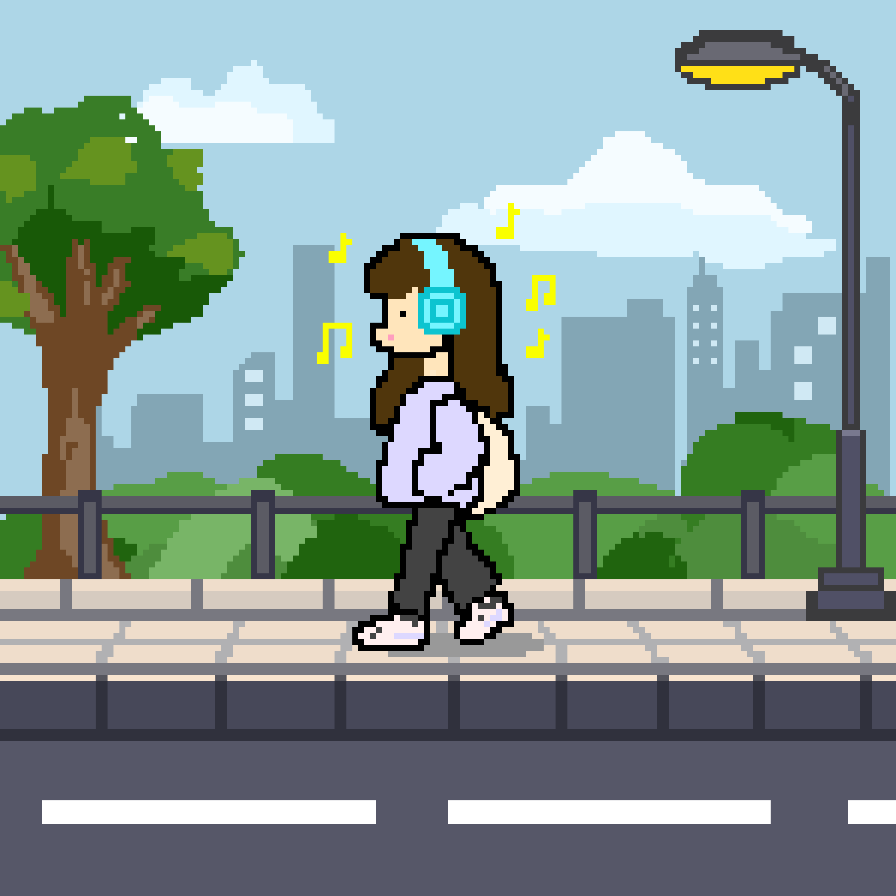
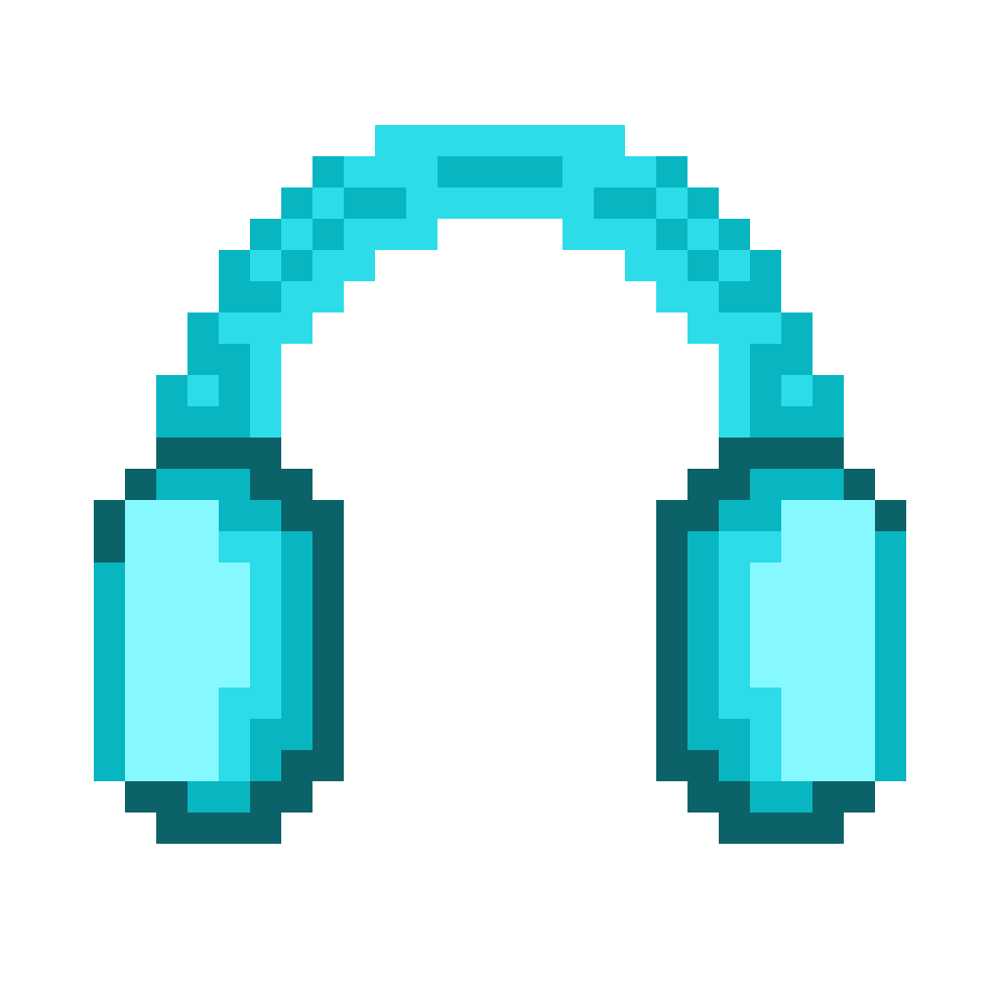

Do you want to help her check what happened?
Grab the headphones
 Repair table
Repair table


When headphones stop working, what would you choose?
Choose the path you would take.
Follow the routine. Watch for the break.